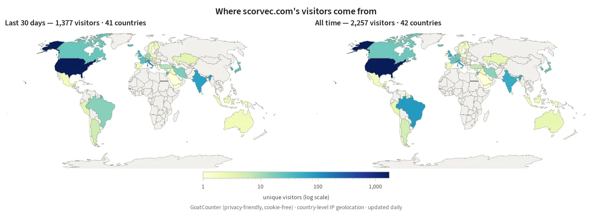

Visitor statistics
Privacy-friendly, cookie-free analytics via GoatCounter. Total unique visitors: —
Where Visitors Come From
Unique visitors by country (IP-geolocated at country level only — no personal data), last 30 days and all time. Updated daily.

Most-Visited Pages (30 days)
Until 15 November 2026 this list under-counts the pages that gained the counter only on 16 October: the homepage, the El Niño, circulation, stratosphere, tropical-waves, seasonal, atmospheric-river, climate-trends and midterm pages, the catalogue, the credit-conditions index and About.
—